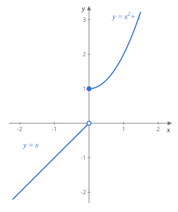
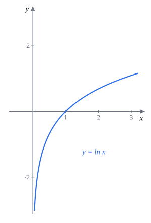
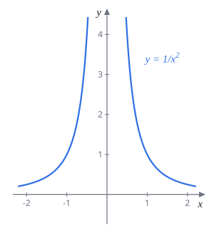
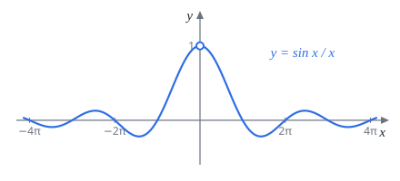
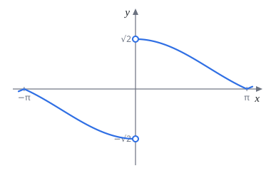
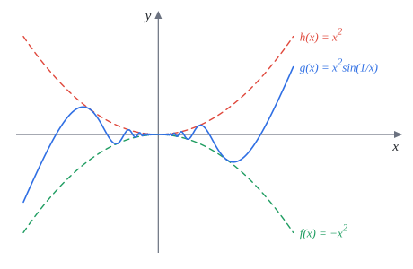
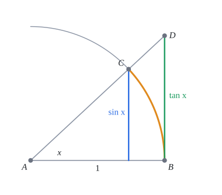
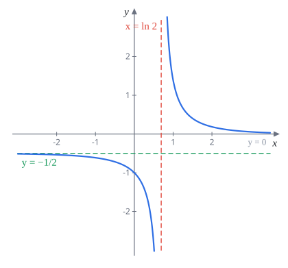
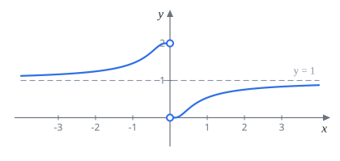

Week 2 極限（Limits）
AP Calculus I（115 學年）Lecture Note 2 教學與題解
講義筆誤讀講義時請自己改正兩處：
- p.13 Exercise (d)：$\displaystyle\lim_{x\to0}\frac{1-\cos x}{\sin(x\sin x)}$ 的答案寫成 $1$，應為 $\dfrac12$（見題 23）。
- p.17 求 $a,b$ 的 Exercise：答案寫成 $b=-\dfrac35$，應為 $b=\dfrac35$。代 $b=-\frac35$ 時分母 $3+\frac35x$ 在 $x=-5$ 才是 $0$，垂直漸近線跑到 $x=-5$（見題 34）。同一題在 p.17 還重複出現了一次。
本週的符號：$\lfloor x\rfloor$ 是高斯符號（不超過 $x$ 的最大整數，講義寫成 $[\![x]\!]$），例如 $\lfloor 2.7\rfloor=2$、$\lfloor -2.3\rfloor=-3$。
2.1 極限的基本概念
直覺定義
微積分處理的都是「靠近」的問題：$x$ 靠近某個數時，$f(x)$ 往哪裡跑？
定義 2.1.1$\displaystyle\lim_{x\to a}f(x)=L$ 的意思是：當 $x$ 從任何方向夠靠近 $a$（但 $x\ne a$）時，$f(x)$ 可以任意靠近 $L$。
有兩個重點：
- $x$ 不等於 $a$。極限只看 $a$ 的附近，$f(a)$ 是多少、甚至有沒有定義都不影響。所以 $\frac{x^2-4}{x-2}$ 在 $x=2$ 沒定義，極限照樣算得出來。
- 這裡的等號描述的是一個逼近的過程，跟中學的恆等式不一樣。嚴格的寫法叫 $\varepsilon$-$\delta$ 定義，講義之後才會介紹。
定義 2.1.2（極限不存在）如果能找到兩種讓 $x$ 靠近 $a$ 的方式（數列 $x_n$ 與 $\hat x_n$），一種讓 $f(x_n)$ 靠近 $L_1$，另一種讓 $f(\hat x_n)$ 靠近 $L_2$，而 $L_1\ne L_2$，就說 $\displaystyle\lim_{x\to a}f(x)$ 不存在（DNE）。
白話說：不同的靠近方式得到不同的值，極限就不存在。
解題套路算極限的第一步永遠是直接代入。代得出數字就是答案；代出 $\frac00$ 這種沒意義的式子，代表分子分母有共同的「會變成 0 的因式」，要先化簡把它約掉，再代入。
題 1求 $\displaystyle\lim_{x\to2}\frac{x^2-4}{x-2}$。
代入得 $\frac00$。分子因式分解，$x\ne2$ 所以可以約掉 $x-2$：
$$\lim_{x\to2}\frac{(x+2)(x-2)}{x-2}=\lim_{x\to2}(x+2)=4$$$4$
題 2求 $\displaystyle\lim_{x\to\frac\pi2}\frac{1+\cos(2x)}{\cos x}$。
代入得 $\frac{1+\cos\pi}{0}=\frac00$。用倍角公式 $\cos2x=2\cos^2x-1$，分子變成 $2\cos^2x$：
$$\lim_{x\to\frac\pi2}\frac{2\cos^2x}{\cos x}=\lim_{x\to\frac\pi2}2\cos x=0$$$0$
題 3（Exercise）求 $\displaystyle\lim_{x\to1}\frac{x^3-1}{x^4-1}$。
$x^3-1=(x-1)(x^2+x+1)$，$x^4-1=(x-1)(x+1)(x^2+1)$，約掉 $x-1$：
$$\lim_{x\to1}\frac{x^2+x+1}{(x+1)(x^2+1)}=\frac{3}{2\cdot2}=\frac34$$$\dfrac34$（與講義答案相同）
講義建議複習高中三角公式：平方關係、和角、倍角、積化和差、和差化積，之後會常用。另外 $\cot x=\frac{\cos x}{\sin x}$、$\sec x=\frac1{\cos x}$、$\csc x=\frac1{\sin x}$ 也要認得。
單邊極限
有時只想看 $x$ 從一邊靠近：
定義 2.1.3$\displaystyle\lim_{x\to a^+}f(x)=L$：$x$ 從 $a$ 的右邊（比 $a$ 大）靠近時，$f(x)$ 靠近 $L$，稱為右極限。
$\displaystyle\lim_{x\to a^-}f(x)=L$：$x$ 從左邊（比 $a$ 小）靠近，稱為左極限。
雙邊極限存在，左右極限當然都等於它。反過來也對：
定理 2.1.1若 $\displaystyle\lim_{x\to a^+}f(x)=\lim_{x\to a^-}f(x)=L$，則 $\displaystyle\lim_{x\to a}f(x)=L$。
所以碰到分段函數、絕對值、高斯符號、根號這些「左右長得不一樣」的東西，就分左右算，相等才有極限。

題 4$f(x)=\begin{cases}x, & x\lt0\\ x^2+1, & x\ge0\end{cases}$，求 $\displaystyle\lim_{x\to0^+}f(x)$ 與 $\displaystyle\lim_{x\to0^-}f(x)$。
右邊 $x\gt0$ 用 $x^2+1$，左邊 $x\lt0$ 用 $x$：
$$\lim_{x\to0^+}(x^2+1)=1,\qquad \lim_{x\to0^-}x=0$$左右不相等，所以 $\displaystyle\lim_{x\to0}f(x)$ 不存在。
右極限 $1$，左極限 $0$
題 5求 $\displaystyle\lim_{x\to0^+}\frac{x}{|x|}$ 與 $\displaystyle\lim_{x\to0^-}\frac{x}{|x|}$。
$x\gt0$ 時 $|x|=x$，比值是 $1$；$x\lt0$ 時 $|x|=-x$，比值是 $-1$。
右極限 $1$，左極限 $-1$（雙邊極限不存在）
題 6求 $\displaystyle\lim_{x\to2^+}\lfloor x\rfloor$ 與 $\displaystyle\lim_{x\to2^-}\lfloor -x\rfloor$。
$x\to2^+$：$x$ 是 $2.001$ 這種數，$\lfloor x\rfloor=2$。
$x\to2^-$：$x$ 是 $1.999$ 這種數，$-x=-1.999$，不超過它的最大整數是 $-2$。
$\displaystyle\lim_{x\to2^+}\lfloor x\rfloor=2,\qquad\lim_{x\to2^-}\lfloor -x\rfloor=-2$
題 7求 $\displaystyle\lim_{x\to3^-}\frac{x^2-4x+3}{\sqrt{(x-3)^2}}$。
關鍵是 $\sqrt{(x-3)^2}=|x-3|$，不是 $x-3$。$x\lt3$ 時 $|x-3|=3-x$：
$$\lim_{x\to3^-}\frac{(x-1)(x-3)}{3-x}=\lim_{x\to3^-}\bigl(-(x-1)\bigr)=-2$$$-2$
題 8（Exercise）求 (a) $\displaystyle\lim_{x\to3^+}\frac{\lfloor x\rfloor}{x}$ (b) $\displaystyle\lim_{x\to3^-}\frac{\lfloor x\rfloor}{x}$ (c) $\displaystyle\lim_{x\to0^+}\sin\frac1x$ (d) $\displaystyle\lim_{x\to+\infty}\sin\frac1x$。
(a) $x$ 略大於 $3$，$\lfloor x\rfloor=3$，極限 $\frac33=1$。
(b) $x$ 略小於 $3$，$\lfloor x\rfloor=2$，極限 $\frac23$。
(c) $x\to0^+$ 時 $\frac1x\to+\infty$，$\sin\frac1x$ 在 $-1$ 到 $1$ 之間一直來回。用定義 2.1.2 找兩種靠近方式：取 $x_n=\frac1{2n\pi}$，$\sin\frac1{x_n}=\sin(2n\pi)=0$；取 $\hat x_n=\frac1{2n\pi+\pi/2}$，$\sin\frac1{\hat x_n}=1$。兩個數列都趨近 $0^+$，函數值卻分別停在 $0$ 和 $1$，極限不存在。
(d) $x\to+\infty$ 時 $\frac1x\to0$，$\sin\frac1x\to\sin0=0$。(c) 和 (d) 長得像，但 $\frac1x$ 跑去的地方完全不同。
(a) $1$ (b) $\dfrac23$ (c) DNE (d) $0$（與講義答案相同）
題 9（Exercise）$g(x)=\begin{cases}\dfrac{x^2+4x-12}{x^2-2x}, & x\ne2\\[2mm] 3, & x=2\end{cases}$，求 $\displaystyle\lim_{x\to2^+}g(x)$、$\displaystyle\lim_{x\to2^-}g(x)$、$\displaystyle\lim_{x\to2}g(x)$ 與 $g(2)$。
$x\ne2$ 時 $g(x)=\dfrac{(x+6)(x-2)}{x(x-2)}=\dfrac{x+6}{x}$，兩邊靠近 $2$ 都用這個式子，極限是 $\frac82=4$。左右都是 $4$，雙邊極限也是 $4$。
$g(2)$ 是另外規定的 $3$。這題正好說明極限不管 $f(a)$ 是多少。
三個極限都是 $4$，$g(2)=3$（與講義答案相同）
2.2 無窮極限與垂直漸近線
如果 $x\to a$ 時 $f(x)$ 沒有靠近某個數，而是一路衝向正無限大，就寫 $\displaystyle\lim_{x\to a}f(x)=\infty$；衝向負無限大寫 $-\infty$。單邊版本 $\displaystyle\lim_{x\to a^\pm}f(x)=\pm\infty$ 也一樣定義。
寫 $=\infty$ 只是在描述函數怎麼發散，嚴格說這個極限仍然不存在（$\infty$ 不是一個數）。
定義 2.2.2只要 $\displaystyle\lim_{x\to a^+}f(x)$、$\displaystyle\lim_{x\to a^-}f(x)$、$\displaystyle\lim_{x\to a}f(x)$ 其中至少一個是 $\infty$ 或 $-\infty$，直線 $x=a$ 就是 $y=f(x)$ 的垂直漸近線。
解題套路找垂直漸近線：先列出可疑點（分母為 $0$、$\ln$ 裡面趨近 $0$ 的地方），再逐點算極限確認真的爆掉。分子分母能約掉的點只是一個洞，不是漸近線。判斷正負無限大時，看分子的正負和分母從哪一側趨近 $0$。


題 10討論 $f(x)=\ln x$ 的垂直漸近線。
$\ln x$ 只定義在 $x\gt0$，所以只能從右邊靠近 $0$。$x$ 越接近 $0$，$\ln x$ 越負（例如 $\ln10^{-10}\approx-23$）：
$$\lim_{x\to0^+}\ln x=-\infty$$只有右極限也夠了，因為定義只要求其中一個爆掉。
$x=0$ 是垂直漸近線
題 11討論 $f(x)=\dfrac1{x^2}$ 的垂直漸近線。
分母 $x^2\to0$，而且不論左右都是正的，所以
$$\lim_{x\to0}\frac1{x^2}=\infty$$$x=0$ 是垂直漸近線
題 12求 $f(x)=\dfrac{x^2-18x+81}{x^2-81}$ 的垂直漸近線。
分母為 $0$ 的可疑點是 $x=\pm9$。先因式分解：
$$f(x)=\frac{(x-9)^2}{(x-9)(x+9)}=\frac{x-9}{x+9}\quad(x\ne9)$$$x=9$：$\displaystyle\lim_{x\to9}\frac{x-9}{x+9}=0$，只是一個洞，不是漸近線。
$x=-9$：分子趨近 $-18$，分母趨近 $0$，$\displaystyle\lim_{x\to-9^+}f(x)=-\infty$（分母 $0^+$）、$\displaystyle\lim_{x\to-9^-}f(x)=+\infty$。
只有 $x=-9$
題 13（Exercise）求垂直漸近線：(a) $f(x)=\dfrac{x+7}{x^2-4}$ (b) $f(x)=\dfrac{e^x}{e^{2x}-e^x-6}$。
(a) 分母 $(x-2)(x+2)$ 在 $x=\pm2$ 為 $0$，分子在這兩點分別是 $9$、$5$，不為 $0$，約不掉，兩點都會爆掉。
(b) 令 $u=e^x$，分母 $u^2-u-6=(u-3)(u+2)=(e^x-3)(e^x+2)$。$e^x+2\gt0$ 永遠不為 $0$；$e^x=3$ 即 $x=\ln3$，此時分子 $e^x=3\ne0$，所以會爆掉。
(a) $x=2$、$x=-2$ (b) $x=\ln3$（與講義答案相同）
2.3 算極限的技巧（一）
重要極限 $\displaystyle\lim_{x\to0}\frac{\sin x}{x}=1$
$x=0$ 代進去是 $\frac00$，但畫圖可以看到函數在 $0$ 附近非常平順地靠近 $1$，只是 $x=0$ 那一點挖了個洞。白話講：$x$ 很小時 $\sin x\approx x$（$x$ 用弧度）。證明放在 2.4 節夾擠定理後面（題 26）。

定理 2.3.1$\displaystyle\lim_{x\to0}\frac{\sin x}{x}=1$。更一般地，只要 $\square\to0$（且 $\square\ne0$），就有 $\dfrac{\sin\square}{\square}\to1$。
技巧 1：極限的四則運算
定理 2.3.2若 $\displaystyle\lim_{x\to a}f(x)$ 與 $\displaystyle\lim_{x\to a}g(x)$ 都存在，則和、差、積的極限等於極限的和、差、積；商也一樣，只要分母的極限不是 $0$。
實際用法是把式子拆成幾個「已知極限的零件」相乘。前提「都存在」很重要，拆出來的零件只要有一個不存在，這條就不能用。
題 14求 $\displaystyle\lim_{x\to0}\frac{\tan(2x)}{x}$。
$\tan2x=\frac{\sin2x}{\cos2x}$。要用 $\frac{\sin\square}{\square}$，分母得湊成 $2x$：
$$\frac{\tan2x}{x}=\frac{\sin2x}{2x}\cdot\frac{2}{\cos2x}\ \longrightarrow\ 1\cdot\frac21=2$$$2$
題 15（Exercise）求 $\displaystyle\lim_{x\to0}\frac{\sin x}{\sqrt{x^2}}$（若存在）。
$\sqrt{x^2}=|x|$。所以 $\dfrac{\sin x}{|x|}=\dfrac{\sin x}{x}\cdot\dfrac{x}{|x|}$。
右邊 $\frac{x}{|x|}=1$，極限 $1$；左邊 $\frac{x}{|x|}=-1$，極限 $-1$。左右不同。
不存在（與講義答案相同）
技巧 2：有理化
兩個差不多大的根號相減，代入會變成 $0$ 但看不出跟分母誰比較快。這時乘上「共軛」，用
$$(A+B)(A-B)=A^2-B^2$$把根號去掉，讓 $0$ 的因式露出來。
題 16求 $\displaystyle\lim_{x\to0}\frac{\sqrt{x^2+16}-4}{x^2}$。
上下同乘 $\sqrt{x^2+16}+4$：
$$\frac{(x^2+16)-16}{x^2\bigl(\sqrt{x^2+16}+4\bigr)}=\frac{1}{\sqrt{x^2+16}+4}\ \longrightarrow\ \frac18$$$\dfrac18$
題 17求 $\displaystyle\lim_{x\to0}\frac{1-\cos x}{x^2}$。
學有理化的樣子乘 $1+\cos x$，分子變成 $1-\cos^2x=\sin^2x$：
$$\frac{1-\cos x}{x^2}=\frac{\sin^2x}{x^2(1+\cos x)}=\left(\frac{\sin x}{x}\right)^2\cdot\frac{1}{1+\cos x}\ \longrightarrow\ 1\cdot\frac12$$$\dfrac12$
這個結果很常用：$x$ 很小時 $1-\cos x\approx\dfrac{x^2}{2}$。
題 18求 $\displaystyle\lim_{x\to0}\left(\frac1x-\frac{1}{x\sqrt{1+x}}\right)$。
先通分：$\dfrac{\sqrt{1+x}-1}{x\sqrt{1+x}}$，代入是 $\frac00$。分子有理化，乘 $\sqrt{1+x}+1$：
$$\frac{(1+x)-1}{x\sqrt{1+x}\bigl(\sqrt{1+x}+1\bigr)}=\frac{1}{\sqrt{1+x}\bigl(\sqrt{1+x}+1\bigr)}\ \longrightarrow\ \frac{1}{1\cdot2}$$$\dfrac12$
題 19（Exercise）求 (a) $\displaystyle\lim_{x\to0}\frac{2(x-3)^2-18}{x}$ (b) $\displaystyle\lim_{x\to4}\frac{x-\sqrt{3x+4}}{4-x}$ (c) $\displaystyle\lim_{x\to1}\frac{1-\sqrt[3]{x}}{1-\sqrt[5]{x}}$。
(a) 展開：$2(x^2-6x+9)-18=2x^2-12x$，除以 $x$ 得 $2x-12\to-12$。
(b) 乘 $x+\sqrt{3x+4}$，分子 $x^2-(3x+4)=(x-4)(x+1)$：
$$\frac{(x-4)(x+1)}{(4-x)\bigl(x+\sqrt{3x+4}\bigr)}=\frac{-(x+1)}{x+\sqrt{3x+4}}\ \longrightarrow\ \frac{-5}{4+4}=-\frac58$$(c) 立方根、五次方根沒辦法用平方差，改用 $1-t^n=(1-t)(1+t+\cdots+t^{n-1})$。令 $u=\sqrt[3]x$、$v=\sqrt[5]x$，兩者都趨近 $1$，而
$$\begin{aligned} 1-x &= 1-u^3 \\ &= (1-u)(1+u+u^2) \\[4pt] 1-x &= 1-v^5 \\ &= (1-v)(1+v+v^2+v^3+v^4) \end{aligned}$$所以
$$\frac{1-u}{1-v}=\frac{1+v+v^2+v^3+v^4}{1+u+u^2}\ \longrightarrow\ \frac53$$(a) $-12$ (b) $-\dfrac58$ (c) $\dfrac53$（與講義答案相同）
2.4 算極限的技巧（二）
技巧 3：代換
把式子裡反覆出現的一團東西取個新名字 $u$，確認 $x\to a$ 時 $u$ 跑到哪，就能把陌生的極限變成熟悉的形式。最常見的是把 $\frac{\sin(\text{一團})}{\text{同一團}}$ 認出來。
題 20求 (a) $\displaystyle\lim_{x\to0}\frac{\sin(\sin x)}{\sin x}$ (b) $\displaystyle\lim_{x\to0}\frac{\sin(1-\cos x)}{x^2}$。
(a) 令 $u=\sin x$。$x\to0$ 時 $u\to0$，且 $x$ 在 $0$ 附近不等於 $0$ 時 $u\ne0$：
$$\lim_{x\to0}\frac{\sin(\sin x)}{\sin x}=\lim_{u\to0}\frac{\sin u}{u}=1$$(b) 令 $u=1-\cos x\to0$（$x$ 在 $0$ 附近且 $x\ne0$ 時 $u\gt0$）。乘一個 $\frac uu$ 拆開：
$$\frac{\sin(1-\cos x)}{x^2}=\frac{\sin u}{u}\cdot\frac{1-\cos x}{x^2}\ \longrightarrow\ 1\cdot\frac12$$第二個因子用題 17。
(a) $1$ (b) $\dfrac12$
常見陷阱
兩個最容易出錯的地方：$\sqrt{\square^2}=|\square|$ 而不是 $\square$；以及 $x\lt0$ 時把 $x$ 搬進或搬出根號，正負號會變。

題 21（根號陷阱）求 $\displaystyle\lim_{x\to0}\frac{\sqrt{1-\cos(2x)}}{x}$。
$1-\cos2x=2\sin^2x$，所以 $\sqrt{1-\cos2x}=\sqrt2\,|\sin x|$。如果寫成 $\sqrt2\sin x$，就會錯得到 $\sqrt2$。
右邊 $x\gt0$ 附近 $\sin x\gt0$：$\dfrac{\sqrt2\sin x}{x}\to\sqrt2$。
左邊 $x\lt0$ 附近 $\sin x\lt0$，$|\sin x|=-\sin x$：$\dfrac{-\sqrt2\sin x}{x}\to-\sqrt2$。
不存在（右極限 $\sqrt2$，左極限 $-\sqrt2$）
題 22（負號陷阱）求 $\displaystyle\lim_{x\to0^-}\sqrt{\frac1{x^2}-\frac1x}\,\left(\sin\frac x2\right)$。
根號內通分：$\dfrac1{x^2}-\dfrac1x=\dfrac{1-x}{x^2}$，所以
$$\sqrt{\frac{1-x}{x^2}}=\frac{\sqrt{1-x}}{|x|}=\frac{\sqrt{1-x}}{-x}\quad(x\lt0)$$直接寫成 $\frac{\sqrt{1-x}}{x}$ 就掉進陷阱。接著湊 $\frac{\sin\square}{\square}$：
$$-\frac{\sqrt{1-x}\,\sin\frac x2}{x}=-\sqrt{1-x}\cdot\frac12\cdot\frac{\sin\frac x2}{\frac x2}\ \longrightarrow\ -1\cdot\frac12\cdot1$$$-\dfrac12$
題 23（Exercise）求
(a) $\displaystyle\lim_{x\to2}\frac{\sqrt{1+\sqrt{x+2}}-\sqrt3}{x-2}$
(b) $\displaystyle\lim_{x\to27}\frac{\sqrt{1+\sqrt[3]{x}}-2}{x-27}$
(c) $\displaystyle\lim_{x\to0}\frac{|2x+1|-|2x-1|}{|x+2|-|x-2|}$
(d) $\displaystyle\lim_{x\to0}\frac{1-\cos x}{\sin(x\sin x)}$
(e) $\displaystyle\lim_{x\to0}\frac{\sin\bigl(\sin\bigl(\sin\bigl(\sin(x^{2020})\bigr)\bigr)\bigr)}{x^{2020}}$。
(a) 有理化兩次。先乘 $\sqrt{1+\sqrt{x+2}}+\sqrt3$，分子變成 $\sqrt{x+2}-2$；再乘 $\sqrt{x+2}+2$，分子變成 $x-2$，正好跟分母約掉：
$$\frac{1}{\bigl(\sqrt{1+\sqrt{x+2}}+\sqrt3\bigr)\bigl(\sqrt{x+2}+2\bigr)}\ \longrightarrow\ \frac{1}{2\sqrt3\cdot4}=\frac{1}{8\sqrt3}$$(b) 乘 $\sqrt{1+\sqrt[3]x}+2$，分子變成 $\sqrt[3]x-3$。令 $u=\sqrt[3]x\to3$，分母 $x-27=u^3-27=(u-3)(u^2+3u+9)$：
$$\frac{1}{\bigl(\sqrt{1+u}+2\bigr)(u^2+3u+9)}\ \longrightarrow\ \frac{1}{4\cdot27}=\frac1{108}$$(c) $x$ 在 $0$ 附近時 $2x+1\gt0$、$2x-1\lt0$、$x+2\gt0$、$x-2\lt0$，絕對值可以直接拆：
$$\frac{(2x+1)-(1-2x)}{(x+2)-(2-x)}=\frac{4x}{2x}=2$$(d) 拆成三個已知零件：
$$\frac{1-\cos x}{\sin(x\sin x)}=\frac{1-\cos x}{x^2}\cdot\frac{x\sin x}{\sin(x\sin x)}\cdot\frac{x}{\sin x}\ \longrightarrow\ \frac12\cdot1\cdot1=\frac12$$中間那項是 $\frac{\square}{\sin\square}$ 且 $\square=x\sin x\to0$。直覺上分子約 $\frac{x^2}2$，分母約 $x\cdot x$，比值 $\frac12$。講義答案 $1$ 是筆誤。
(e) 令 $u=x^{2020}\to0$，一層一層乘開：
$$\frac{\sin(\sin(\sin(\sin u)))}{\sin(\sin(\sin u))}\cdot\frac{\sin(\sin(\sin u))}{\sin(\sin u)}\cdot\frac{\sin(\sin u)}{\sin u}\cdot\frac{\sin u}{u}$$每一項都是 $\frac{\sin\square}{\square}$ 且 $\square\to0$，乘起來是 $1$。
(a) $\dfrac1{8\sqrt3}=\dfrac{\sqrt3}{24}$ (b) $\dfrac1{108}$ (c) $2$ (d) $\dfrac12$（講義寫 $1$，有誤） (e) $1$
技巧 4：夾擠定理
有些函數本身亂跳，直接算不出來，但能被兩個好算的函數上下夾住。如果上下兩個都往同一個值收，被夾的那個也只好跟著去。
定理 2.4.1（夾擠定理）若在 $a$ 附近 $f(x)\le g(x)\le h(x)$，且 $\displaystyle\lim_{x\to a}f(x)=\lim_{x\to a}h(x)=L$，則 $\displaystyle\lim_{x\to a}g(x)=L$。

題 24求 $\displaystyle\lim_{x\to0}x^2\sin\frac{1}{x^{999}}$。
$\sin\frac1{x^{999}}$ 自己沒有極限（跟題 8(c) 一樣一直來回），所以不能用四則運算拆。但不管裡面是什麼，$-1\le\sin(\cdots)\le1$，乘上 $x^2\ge0$：
$$-x^2\le x^2\sin\frac1{x^{999}}\le x^2$$兩邊的 $\pm x^2\to0$，由夾擠定理得極限為 $0$。
$0$
這個套路可以整理成一個好用的定理：
定理 2.4.2若 $f(x)$ 有界（存在 $M\gt0$ 使 $|f(x)|\le M$），且 $\displaystyle\lim_{x\to a}g(x)=0$，則 $\displaystyle\lim_{x\to a}f(x)g(x)=0$。
口訣是有界乘以趨近 $0$，結果趨近 $0$。證明：$0\le|f(x)g(x)|\le M|g(x)|$，右邊趨近 $M\cdot0=0$，夾擠得 $|f(x)g(x)|\to0$，所以 $f(x)g(x)\to0$。
題 25（Exercise）求
(a) $\displaystyle\lim_{x\to0}\sin(x)\frac{x}{|x|}$
(b) $\displaystyle\lim_{x\to1}\sin(\pi x)\sin\left(\frac1{x-1}\right)e^{\frac1{x^2+1}}$
(c) $\displaystyle\lim_{h\to0}h\left\lfloor\frac1h\right\rfloor$
(d) $\displaystyle\lim_{x\to\frac13^+}\left\lfloor\frac1x\left\lfloor\frac1x\right\rfloor\right\rfloor$。
(a) $\frac{x}{|x|}$ 只取 $\pm1$，有界；$\sin x\to0$。由定理 2.4.2 得 $0$。（左右極限分別算也都是 $0$。）
(b) $\sin\frac1{x-1}$ 介於 $\pm1$；$\frac1{x^2+1}\le1$，所以 $0\lt e^{\frac1{x^2+1}}\le e$。這兩項的乘積有界，而 $\sin(\pi x)\to\sin\pi=0$，結果為 $0$。
(c) 高斯符號的基本不等式：$\dfrac1h-1\lt\left\lfloor\dfrac1h\right\rfloor\le\dfrac1h$。
- $h\gt0$：乘以 $h$ 不等號方向不變，$1-h\lt h\lfloor\frac1h\rfloor\le1$。
- $h\lt0$：乘以負數不等號反向，$1-h\gt h\lfloor\frac1h\rfloor\ge1$。
兩種情況都被 $1$ 和 $1-h$ 夾住，而 $1-h\to1$，所以極限是 $1$。
(d) 由內往外算。$x\to\frac13^+$ 表示 $x$ 略大於 $\frac13$，於是 $\frac1x$ 略小於 $3$，$\left\lfloor\frac1x\right\rfloor=2$。外層變成 $\left\lfloor\frac2x\right\rfloor$，而 $\frac2x$ 略小於 $6$，取整數部分得 $5$。在 $\frac13$ 右邊一小段內函數值恆為 $5$，極限就是 $5$。講義這小題沒附答案。
(a) $0$ (b) $0$ (c) $1$（與講義答案相同） (d) $5$
證明 $\displaystyle\lim_{x\to0}\frac{\sin x}{x}=1$

題 26用夾擠定理證明 $\displaystyle\lim_{x\to0}\frac{\sin x}{x}=1$。
情況 1：$x\to0^+$（取 $0\lt x\lt\frac\pi2$）。在單位圓上取圓心 $A$、$B=(1,0)$，$C$ 在圓上使 $\angle CAB=x$，$D$ 是射線 $AC$ 與過 $B$ 的鉛直切線的交點。半徑是 $1$，所以弧 $BC$ 長 $x$，$C$ 的高度是 $\sin x$，$BD=\tan x$。從圖上看（嚴格比較可以用面積：三角形 $ABC\le$ 扇形 $ABC\le$ 三角形 $ABD$）：
$$\sin x\le x\le\tan x=\frac{\sin x}{\cos x}$$全部除以 $\sin x\gt0$ 再取倒數（不等號反向）：
$$\cos x\le\frac{\sin x}{x}\le1$$$\displaystyle\lim_{x\to0^+}\cos x=1$，由夾擠定理，$\displaystyle\lim_{x\to0^+}\frac{\sin x}{x}=1$。
情況 2：$x\to0^-$。令 $y=-x$，則 $y\to0^+$：
$$\lim_{x\to0^-}\frac{\sin x}{x}=\lim_{y\to0^+}\frac{\sin(-y)}{-y}=\lim_{y\to0^+}\frac{\sin y}{y}=1$$左右極限都是 $1$，由定理 2.1.1 得證。
$\displaystyle\lim_{x\to0}\frac{\sin x}{x}=1$
2.5 無窮遠處的極限與水平漸近線
$\displaystyle\lim_{x\to\infty}f(x)=L$ 表示 $x$ 越來越大時 $f(x)$ 靠近 $L$；$x\to-\infty$ 同理。前面所有的性質（四則運算、夾擠）在這裡都照用。
自然數 $n=1,2,3,\dots$ 也會越來越大，所以數列 $f(n)$ 也能談 $\displaystyle\lim_{n\to\infty}f(n)$，算法相同。
解題套路
- 分式：分子分母同除以最高次項，其他項都會變成 $\frac{\text{常數}}{x^k}\to0$。
- 有根號時，把 $x^2$ 搬出根號要變 $|x|$；$x\to-\infty$ 時 $|x|=-x$。
- $\infty-\infty$ 型（例如 $\sqrt{x^2+x}-x$）：有理化。
- 有 $\sin$、$\cos$、高斯符號這種擺盪或跳動的東西：夾擠，或用「有界乘以趨近 $0$」。
回顧指數函數
題 27討論 $f(x)=a^x$（$a\gt1$）在 $x\to\pm\infty$ 的極限。
$a\gt1$ 時 $a^x$ 遞增而且沒有上界：$x$ 每加 $1$ 就乘一次 $a$，所以 $\displaystyle\lim_{x\to\infty}a^x=\infty$。
$x\to-\infty$ 時 $a^x=\dfrac1{a^{-x}}$，分母趨近 $\infty$，所以 $\displaystyle\lim_{x\to-\infty}a^x=0$，$y=0$ 是水平漸近線。
$\displaystyle\lim_{x\to\infty}a^x=\infty,\qquad\lim_{x\to-\infty}a^x=0$
題 28求 (a) $\displaystyle\lim_{x\to\infty}\frac{2}{1+10^x}$ (b) $\displaystyle\lim_{x\to-\infty}\frac{2}{1+10^x}$ (c) $\displaystyle\lim_{x\to-\infty}\frac{\sqrt{x^6+2025}}{x^3-3x+2}$ (d) $\displaystyle\lim_{x\to\infty}\left(\sqrt{x^2+x}-x\right)$。
(a) $10^x\to\infty$，分母爆掉，極限 $0$。
(b) $10^x\to0$，極限 $\frac21=2$。
(c) 最高次是 $x^3$。分子 $\sqrt{x^6+2025}=\sqrt{x^6}\sqrt{1+\frac{2025}{x^6}}=|x|^3\sqrt{1+\frac{2025}{x^6}}$，而 $x\lt0$ 時 $|x|^3=-x^3$。上下同除 $x^3$：
$$\frac{-\sqrt{1+\frac{2025}{x^6}}}{1-\frac3{x^2}+\frac2{x^3}}\ \longrightarrow\ \frac{-1}{1}=-1$$這裡如果忘了負號會得到 $1$。
(d) $\infty-\infty$，有理化：
$$\begin{aligned} \sqrt{x^2+x}-x &= \frac{(x^2+x)-x^2}{\sqrt{x^2+x}+x} \\ &= \frac{x}{\sqrt{x^2+x}+x} \\ &= \frac{1}{\sqrt{1+\frac1x}+1} \\ &\longrightarrow \frac12 \end{aligned}$$（倒數第二步上下同除 $x$，$x\gt0$ 所以 $\frac{\sqrt{x^2+x}}{x}=\sqrt{1+\frac1x}$。）
(a) $0$ (b) $2$ (c) $-1$ (d) $\dfrac12$
題 29（Exercise）求 $\displaystyle\lim_{x\to+\infty}\frac{\lfloor x\rfloor}{x}$。（提示：$x-1\le\lfloor x\rfloor\le x$）
$x\gt0$，提示的不等式同除以 $x$：
$$1-\frac1x\le\frac{\lfloor x\rfloor}{x}\le1$$左邊趨近 $1$，夾擠得 $1$。
$1$（與講義答案相同）
題 30（Exercise）求 $\displaystyle\lim_{x\to+\infty}\frac{\sin x}{x}$。
$\sin x$ 有界，$\frac1x\to0$，由定理 2.4.2 得 $0$。或寫成夾擠：$-\frac1x\le\frac{\sin x}{x}\le\frac1x$。注意跟 $x\to0$ 的那個重要極限是不同的題目。
$0$（與講義答案相同）
題 31（Exercise）求 $\displaystyle\lim_{n\to+\infty}\frac{n!}{n^n}$ 與 $\displaystyle\lim_{x\to+\infty}e^{-x}\sin x$。（提示：夾擠定理）
第一個：把分子分母拆成 $n$ 個分數相乘，
$$\frac{n!}{n^n}=\frac1n\cdot\frac2n\cdot\frac3n\cdots\frac nn$$除了第一個 $\frac1n$，其餘每個分數都 $\le1$，所以 $0\lt\dfrac{n!}{n^n}\le\dfrac1n\to0$，極限為 $0$。
第二個：$|e^{-x}\sin x|\le e^{-x}\to0$，所以 $-e^{-x}\le e^{-x}\sin x\le e^{-x}$，夾擠得 $0$。
兩個都是 $0$
題 32求 $\displaystyle\lim_{x\to+\infty}\left(\cos\sqrt{2024+x}-\cos\sqrt x\right)$。（提示：和差化積）
$\cos\sqrt{2024+x}$ 和 $\cos\sqrt x$ 各自都一直擺盪沒有極限，不能拆開算。用和差化積 $\cos A-\cos B=-2\sin\frac{A+B}2\sin\frac{A-B}2$：
$$-2\sin\left(\frac{\sqrt{2024+x}+\sqrt x}{2}\right)\sin\left(\frac{\sqrt{2024+x}-\sqrt x}{2}\right)$$第二個 $\sin$ 裡面有理化：
$$\begin{aligned} \frac{\sqrt{2024+x}-\sqrt x}{2} &= \frac{2024}{2\bigl(\sqrt{2024+x}+\sqrt x\bigr)} \\ &= \frac{1012}{\sqrt{2024+x}+\sqrt x} \\ &\longrightarrow 0 \end{aligned}$$所以第二個因子 $\to\sin0=0$，前面的 $-2\sin(\cdots)$ 介於 $\pm2$ 之間有界，由定理 2.4.2 得 $0$。
$0$
直覺上：$\sqrt{2024+x}$ 和 $\sqrt x$ 的差距會縮到 $0$，兩個角度越來越接近，餘弦值也就越來越接近。
水平漸近線
定義 2.5.2若 $\displaystyle\lim_{x\to\infty}f(x)=L$ 或 $\displaystyle\lim_{x\to-\infty}f(x)=L$ 至少一個成立，直線 $y=L$ 就是水平漸近線。
兩邊要分開算，往右和往左可能收到不同的值，那就有兩條水平漸近線。帶 $e^x$ 的函數最常這樣，因為 $x\to\infty$ 時 $e^x$ 爆掉，$x\to-\infty$ 時 $e^x\to0$。

題 33求 $f(x)=\dfrac{e^x+2}{e^{2x}-4}$ 的垂直與水平漸近線（若有）。
分母 $e^{2x}-4=(e^x-2)(e^x+2)$，而 $e^x+2\gt0$ 可以跟分子約掉：
$$f(x)=\frac{1}{e^x-2}$$垂直：$e^x=2$ 即 $x=\ln2$。$x\to\ln2^+$ 時分母 $\to0^+$，$f\to+\infty$；$x\to\ln2^-$ 時 $f\to-\infty$。
水平：$x\to\infty$，$e^x\to\infty$，$f\to0$；$x\to-\infty$，$e^x\to0$，$f\to\frac1{0-2}=-\frac12$。
垂直漸近線 $x=\ln2$；水平漸近線 $y=0$ 與 $y=-\dfrac12$
題 34（Exercise）求常數 $a,b$，使 $f(x)=\dfrac{ax+5}{3-bx}$ 的圖形有垂直漸近線 $x=5$ 與水平漸近線 $y=-3$。（講義 p.17 這題出現兩次）
水平：上下同除 $x$，$\dfrac{a+\frac5x}{\frac3x-b}\to\dfrac{a}{-b}$。要等於 $-3$，得 $a=3b$。
垂直：分母在 $x=5$ 為 $0$：$3-5b=0$，$b=\frac35$。於是 $a=\frac95$。
檢查：$f(x)=\dfrac{\frac95x+5}{3-\frac35x}=\dfrac{9x+25}{15-3x}$。$x=5$ 時分子 $70\ne0$，確實爆掉；$x\to\pm\infty$ 時趨近 $\frac9{-3}=-3$。
$a=\dfrac95,\ b=\dfrac35$（講義寫 $b=-\frac35$，有誤）

題 35（Exercise）$f(x)=\dfrac{2}{1+e^{1/x}}$，求 $\displaystyle\lim_{x\to0^+}f(x)$、$\displaystyle\lim_{x\to0^-}f(x)$、$\displaystyle\lim_{x\to+\infty}f(x)$、$\displaystyle\lim_{x\to-\infty}f(x)$。
全部看 $\frac1x$ 跑到哪，再看 $e^{1/x}$：
- $x\to0^+$：$\frac1x\to+\infty$，$e^{1/x}\to\infty$，$f\to0$。
- $x\to0^-$：$\frac1x\to-\infty$，$e^{1/x}\to0$，$f\to\frac21=2$。
- $x\to\pm\infty$：$\frac1x\to0$，$e^{1/x}\to1$，$f\to\frac22=1$。
$0,\ 2,\ 1,\ 1$（與講義答案相同）
題 36（Exercise）求 $\displaystyle\lim_{x\to+\infty}\frac{\sqrt{e^{2x}+2025}}{3^x}$ 與 $\displaystyle\lim_{x\to+\infty}\frac{x-\cos x}{x+\cos x}$。
第一個：分子大約是 $\sqrt{e^{2x}}=e^x$。把它提出來：
$$\frac{\sqrt{e^{2x}+2025}}{3^x}=\sqrt{1+\frac{2025}{e^{2x}}}\cdot\left(\frac e3\right)^x\ \longrightarrow\ 1\cdot0=0$$因為 $0\lt\frac e3\lt1$，它的 $x$ 次方趨近 $0$。也就是 $3^x$ 長得比 $e^x$ 快。
第二個：上下同除 $x$，$\dfrac{1-\frac{\cos x}x}{1+\frac{\cos x}x}$，而 $\frac{\cos x}{x}\to0$（有界乘以趨近 $0$），極限 $\frac11$。
$0$ 與 $1$（與講義答案相同）
最後，$x\to\pm\infty$ 時函數也可能自己爆掉，寫成 $\displaystyle\lim_{x\to+\infty}f(x)=+\infty$ 等等（定義 2.5.3）。
題 37說明 $\displaystyle\lim_{x\to+\infty}e^x=+\infty$、$\displaystyle\lim_{x\to+\infty}\ln x=+\infty$、$\displaystyle\lim_{x\to-\infty}x^2=+\infty$。
$e^x$：題 27 取 $a=e$。
$\ln x$：長得很慢但沒有上界，要 $\ln x\gt M$ 只要 $x\gt e^M$。
$x^2$：$x$ 往負的方向越走越遠，平方是越來越大的正數。
三個都是 $+\infty$
題 38（Exercise）求下面兩個函數的垂直漸近線。
$$f(x)=\ln\left(1-\frac{2x-1}{(x-1)(x-3)}\right),\qquad g(x)=\ln\left(1-\frac{2x-1}{x^2}\right)$$$\ln u$ 會爆掉的情況有兩種：$u\to0^+$（$\ln\to-\infty$）或 $u\to+\infty$（$\ln\to+\infty$）。所以先把 $\ln$ 裡面通分。
$f$：
$$u=\frac{(x-1)(x-3)-(2x-1)}{(x-1)(x-3)}=\frac{x^2-6x+4}{(x-1)(x-3)}$$分子的根是 $x=3\pm\sqrt5$（約 $0.76$ 與 $5.24$），分母的根是 $1$、$3$。正負號表：
| 區間 | $u$ 的正負 |
|---|---|
| $x\lt3-\sqrt5$ | $+$ |
| $(3-\sqrt5,1)$ | $-$ |
| $(1,3)$ | $+$ |
| $(3,3+\sqrt5)$ | $-$ |
| $x\gt3+\sqrt5$ | $+$ |
$f$ 只定義在 $u\gt0$ 的區間。逐點檢查：
- $x\to(3-\sqrt5)^-$：$u\to0^+$，$f\to-\infty$。
- $x\to1^+$：分子趨近 $-1$，分母 $(x-1)(x-3)\to0^-$，$u\to+\infty$，$f\to+\infty$。
- $x\to3^-$：分子趨近 $-5$，分母 $\to0^-$，$u\to+\infty$，$f\to+\infty$。
- $x\to(3+\sqrt5)^+$：$u\to0^+$，$f\to-\infty$。
$g$：
$$\begin{aligned} u &= \frac{x^2-2x+1}{x^2} \\ &= \frac{(x-1)^2}{x^2} \\[4pt] g(x) &= \ln\frac{(x-1)^2}{x^2} \\ &= 2\ln\left|\frac{x-1}{x}\right| \end{aligned}$$$x\to0$：$u\to+\infty$，$g\to+\infty$。$x\to1$：$u\to0^+$，$g\to-\infty$。
$f$：$x=1$、$x=3$、$x=3-\sqrt5$、$x=3+\sqrt5$；$g$：$x=0$、$x=1$
常見的漏網之魚是 $x=3\pm\sqrt5$：只看分母為 $0$ 的點會漏掉 $\ln$ 裡面趨近 $0$ 的地方。講義沒附答案。
本週必背總整理
- 極限只看 $a$ 附近、不看 $f(a)$；左右極限相等，雙邊極限才存在。
- 代入得 $\frac00$：因式分解約掉、有理化、湊 $\dfrac{\sin\square}{\square}\to1$、代換。
- $\displaystyle\lim_{x\to0}\frac{\sin x}{x}=1$，$\displaystyle\lim_{x\to0}\frac{1-\cos x}{x^2}=\frac12$。
- $\sqrt{\square^2}=|\square|$；$x\lt0$ 時 $\sqrt{x^2}=-x$。分段、絕對值、高斯符號、根號都要分左右。
- 夾擠定理；有界乘以趨近 $0$ 的東西，極限是 $0$。
- $x\to\pm\infty$：同除最高次項；$\infty-\infty$ 用有理化；$e^x$ 兩邊分開算。
- 垂直漸近線：分母為 $0$ 或 $\ln$ 裡面趨近 $0$ 的點，要確認極限真的是 $\pm\infty$（約得掉的只是洞）。水平漸近線：算 $x\to\pm\infty$ 的極限。